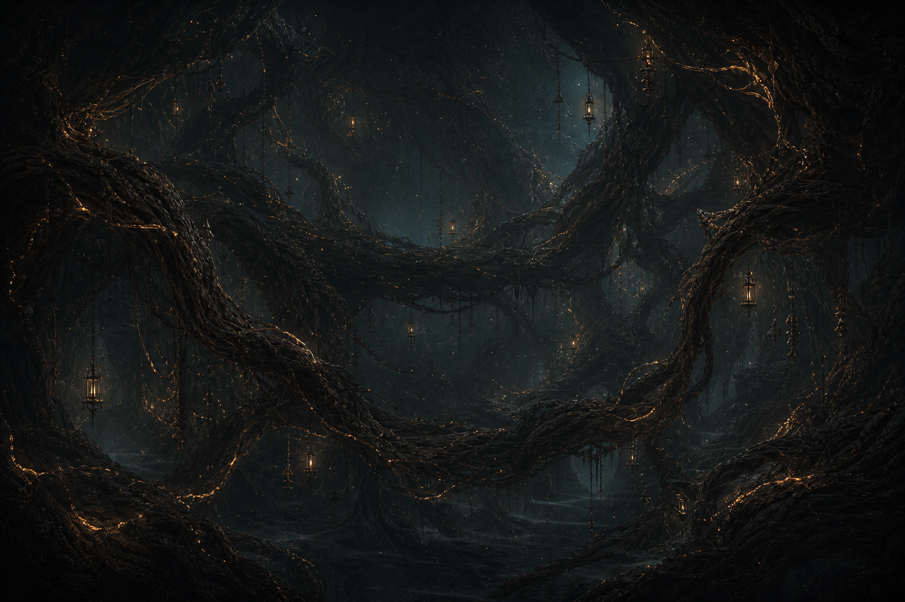

V3 candidate · actual encoded MP4
Temporal quality gate · one biome only
Smooth finished-image motion V3
The exact approved Weathered Roots painting, encoded as an eight-second 60 fps H.264 loop. There is no optical flow, morphing, generated in-between art, Canvas animation, Phaser overlay, or CSS movement.

Exact static source · no animation
Frame rate60 fps
Loop8 seconds
Movement3.2 × 2.1 px
MethodSubpixel whole-image transform